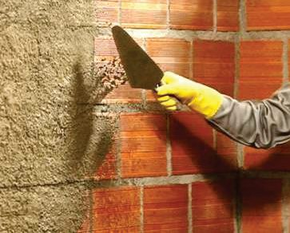

Resina PVA que aumenta a aderência de chapisco, argamassa e gesso.
- Argamassa
Embalagens: 5, 18, 50 e 200 L
Aditivo
Aditivo líquido à base de resina acrílica para argamassa e concreto.
Para chapisco, reparos e emendas em concreto e argamassa.
Chapisco sobre tijolos cerâmicos, blocos, argamassa, concreto e isopor. Áreas internas, externas ou sujeitas à umidade.

| Aplicação | Consumo |
|---|---|
| Chapisco de piso, parede e teto, estucagem e chapisco projetado | 450 g/m² |
| Aditivo de argamassa de reparo, piso, regularização e revestimento | 500 g/m² |
Consumo aproximado do catálogo. A quantidade final é confirmada no orçamento.
Pedir orçamento de I-AcrílicoSuperfície limpa, porosa, sem pó ou óleo, e umedecida antes da aplicação.
Prepare a solução: 1 parte de I-Acrílico para 2 partes de água.
Chapisco: 1 parte de cimento Portland para 3 de areia média, amolentado com a solução.
Aplique com colher de pedreiro, equipamento de projeção ou rolo de textura.
| Densidade | 1,02 g/cm³ |
|---|---|
| Aparência | Líquido branco, isento de cloretos |
| Composição | Copolímero vinílico e aditivos especiais |
| Diluição | 1 parte de I-Acrílico para 2 partes de água |
Valores do catálogo Isolastech 2026. O resultado depende da preparação da superfície e das condições da obra.
Resina PVA que aumenta a aderência de chapisco, argamassa e gesso.
Embalagens: 5, 18, 50 e 200 L
Aditivo plastificante para argamassa e concreto, isento de cloretos.
Embalagens: 0,9; 3,6; 5 e 18 L
Argamassa polimérica semiflexível para piscina, fosso de elevador e baldrame.
Embalagens: consulte
Diga onde vai aplicar e peça a indicação pelo WhatsApp.